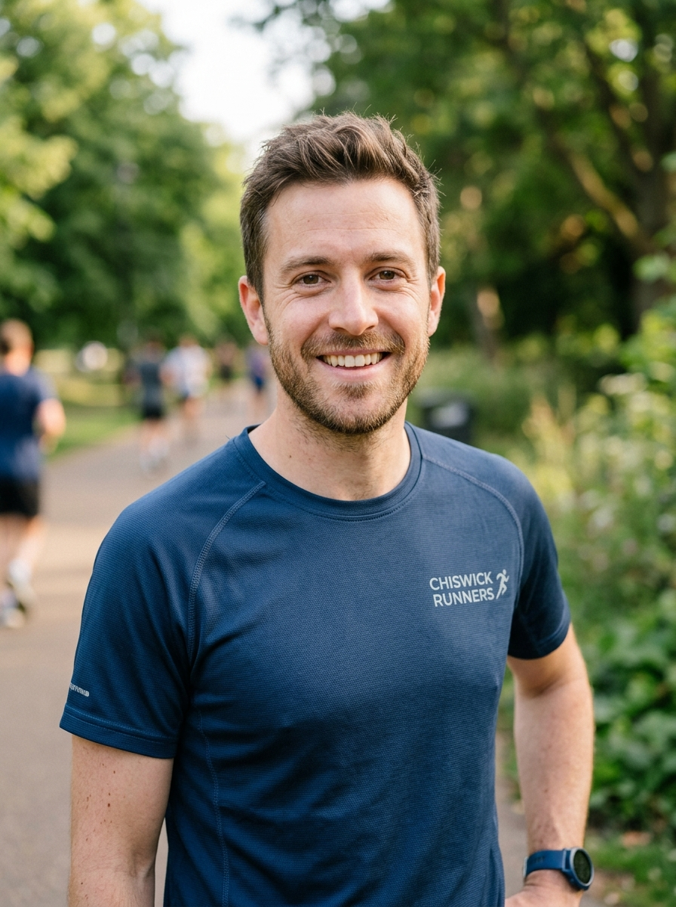
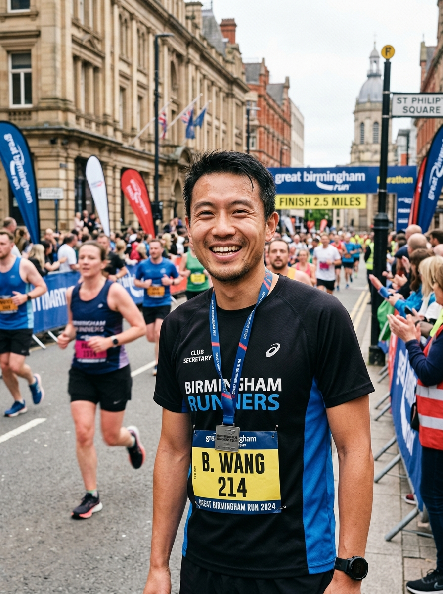
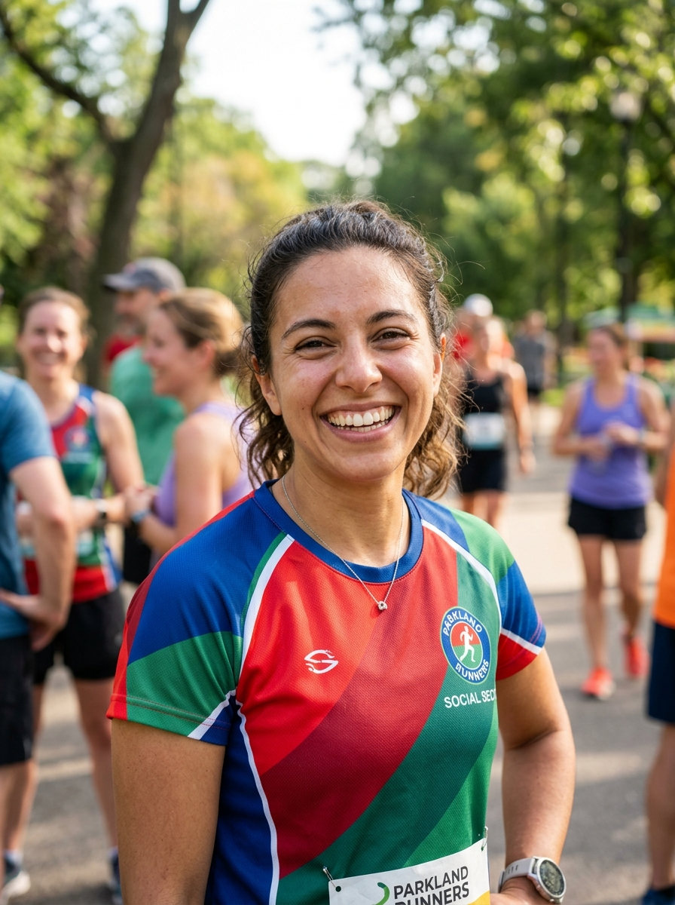
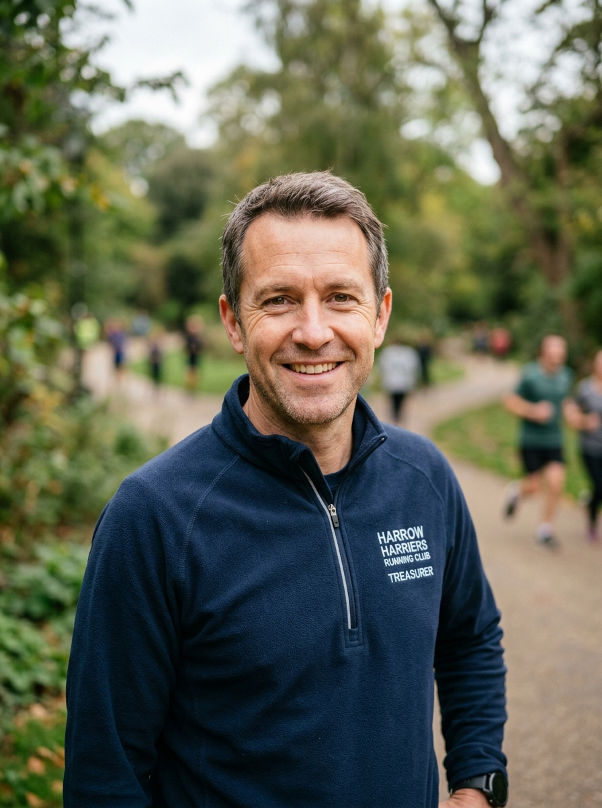

Dedicated Volunteers Powering the Swifts
The Birmingham Swifts are steered entirely by a dedicated committee of volunteers elected each year at our Annual General Meeting (AGM). From coordinating weekly venues and England Athletics race entries to managing finances, welfare safeguarding, and our famous post-run socials, the committee works tirelessly behind the scenes to keep our running club thriving, open, and free from barriers.
We believe in transparent, collaborative leadership that listens to our members. Below, meet the officers currently serving on the Birmingham Swifts Executive Committee.
Joshua Savage
Leads the overall strategic direction of Birmingham Swifts, chairs executive committee meetings and our AGM, oversees constitutional governance, and acts as the official ambassador connecting the club with England Athletics and national LGBTQ+ athletic networks.
- Club strategic vision & constitutional governance
- Chairing committee meetings & the Annual General Meeting
- Official liaison with England Athletics & community partners

Gabriel Stirling
The operational core of the club, maintaining administrative excellence across all club channels. Manages meeting agendas, publishes official minutes, oversees venue permits, handles official correspondence, and ensures documentation compliance.
- Meeting minutes & administrative correspondence
- Club governance records & venue booking coordination
- Member notices & annual affiliation compliance

Bo Wang
Connects Swifts runners with the wider athletics landscape! Coordinates club entries for local 10k, half marathon, and cross-country fixtures, organizes the annual London Marathon club ballot allocation, and maintains club records and PB leaderboards.
- Race calendar planning & team entries
- England Athletics London Marathon ballot administration
- Club race achievements & PB tracking

Susu Nicholas
Curates the fun, social spirit that makes Swifts special beyond running! Organizes our weekly Thursday post-run socials at The Fox, Birmingham Pride parade celebrations, summer picnics, festive dinners, and the annual Club Celebration Awards.
- Thursday post-run socials at The Fox
- Birmingham Pride parade & community events
- Annual Club Awards Banquet & celebration socials
James Chaundy
Champions the vibrant public voice of the Birmingham Swifts. Oversees our Instagram, Facebook, and website updates, captures photography during club runs and race days, and produces our member updates and press releases.
- Social media storytelling & photo galleries
- Website announcements & club news bulletins
- Press liaison & LGBTQ+ athletics outreach

Richard Wilkes
Manages the financial health and sustainability of Birmingham Swifts with complete transparency. Oversees membership funds, subsidizes club running kit, manages England Athletics affiliation dues, and finances run leader training courses.
- Financial accounting & transparent annual audits
- Membership subscriptions & kit subsidy funding
- Budget allocation for run leader & coach qualifications
Want to Get Involved or Have Feedback?
Our committee members are always approachable at Thursday runs or via email. Every member is welcome to attend our AGM, put forward ideas, or stand for an open role!